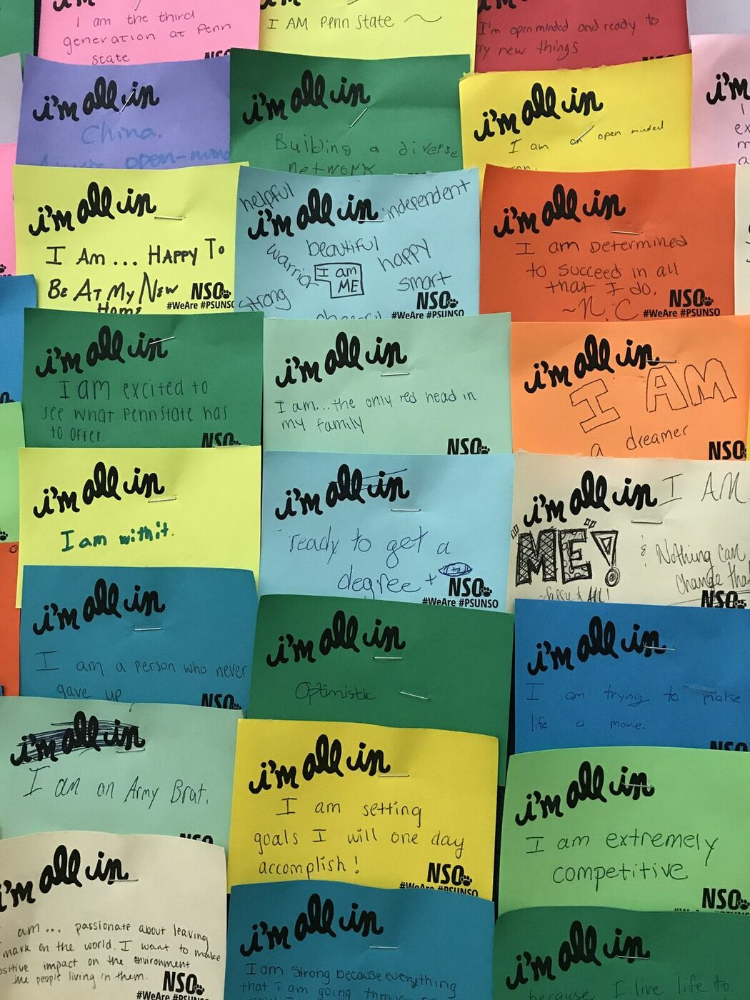
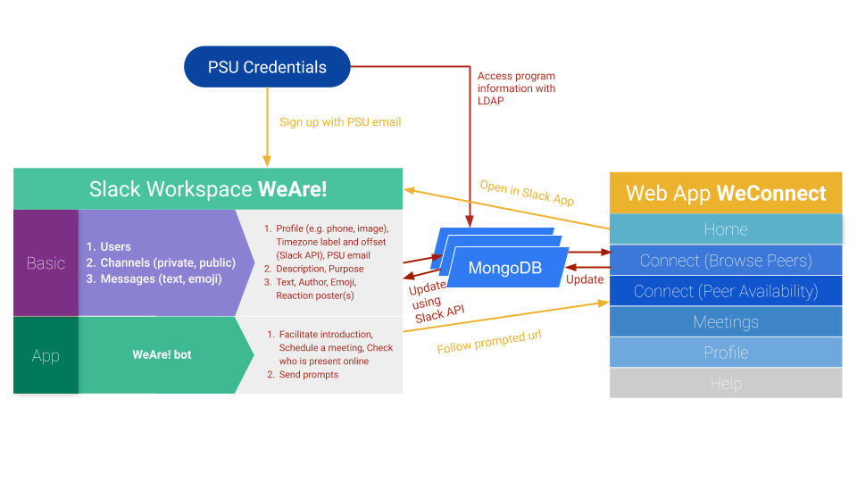

"If I build it, will you belong?"
Building two validated instruments, a Slack bot, and a web app — then running the experiment to find out whether any of it produced a feeling of community.

The problem
Penn State's World Campus is one of the largest online degree programs in the country. Its students earn the same degree as residential students, wear the same letters, and — in the survey I ran — 62.9% of them had never once set foot on campus. They had the credential without the campus, and the question underneath my dissertation was whether the second one could be built out of software.
That question has an awkward prerequisite. You cannot design for community and then claim you improved it unless you can measure it, and the existing instruments for measuring sense of community were written for people who share a physical place.
First, build the ruler
So I developed and validated two instruments: Sense of Community, covering felt affinity and personal ties, and Community Collective Efficacy, covering beliefs about what the community is collectively capable of.
I surveyed the entire active World Campus student population and obtained 740 usable responses. Because I suspected the framing of the word "community" would itself move the needle, I embedded a between-subjects manipulation: half the sample saw community defined as a virtual campus community, half as a network of acquaintances, assigned by randomized blocks after an a priori power analysis set the minimum cell size. Both scales were highly reliable — Cronbach's α of .93 and .96.
Exploratory factor analysis with Varimax rotation, followed by principled removal of cross-loading items, reduced the 10-item sense-of-community scale to seven items across two factors, and the 24-item collective efficacy scale to thirteen items across three. Convergent validity held: standardized loadings and average variance extracted were both above .5 for every construct.
Then build the thing
I built two connected systems. WeAre! was a Slack workspace with a custom bot that walked new members through an introduction, nudged them toward specific social actions, helped schedule meetings, and surfaced who was currently present. WeConnect was a web application that let students browse peers, see shared attributes, and read a visualization of peer availability across time zones.

The design followed directly from the measurement work. If common identity is the lever and friendship isn't, then the system's job is to surface the grounds for affinity people already have — same program, same time zone, same stage of a long degree — rather than to engineer intimacy. 365 students joined.
Then find out whether it worked
The deployment was a quasi-experiment: pre- and post-usage measures with a non-equivalent control group, since students chose for themselves whether to join. 121 participants completed both waves of the sense-of-community measures and 115 completed both collective efficacy waves, splitting into 49 users and 72 non-users.
Because all five community scales were strongly negatively skewed, I used Wilcoxon signed-rank tests rather than paired t-tests. Two constructs moved reliably, and only among the students who actually used the tools: Coordination (Z = 233.500, p < .01) and Social Support (Z = 199.500, p < .01). Nothing moved reliably in the control group, and nothing moved on the sense-of-community constructs at all.
That last part matters and I reported it as prominently as the wins. Four months of a well-used tool did not manufacture friendship or belonging. What it moved was the belief that this group could coordinate and look after each other.
The finding worth remembering
I then ran five ANOVAs on the pre-to-post change scores, after confirming normality and equal variance with Shapiro and Levene tests. The significant predictor was not how often someone used the tool. It was the interaction between usage frequency and how competent the student rated themselves with Slack in general — for Identity Regulation (R² = 45.7%, F(8,40) = 4.810, p < .001) and for Coordination (F(3,40) = 3.569, p < .05).
Reflection
This is the project where I owned every layer: the construct, the instrument that measured it, the system meant to move it, the study that tested whether it did, and the null result sitting next to the positive one. It's also where the question I still work on took shape — how people coordinate through software, and what a system has to make visible before they can.
The durable lesson was about what is and isn't engineerable. You can build the conditions for coordination and mutual support, and measure that you did. You cannot build intimacy, and a researcher who claims otherwise hasn't looked closely at their own control group.